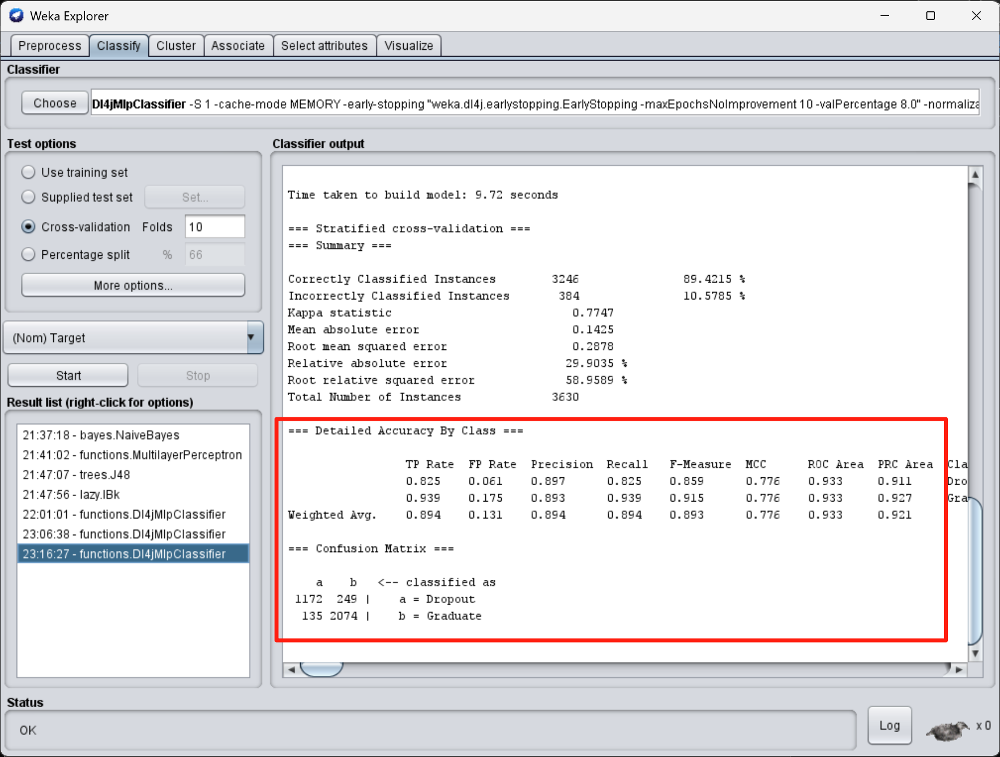
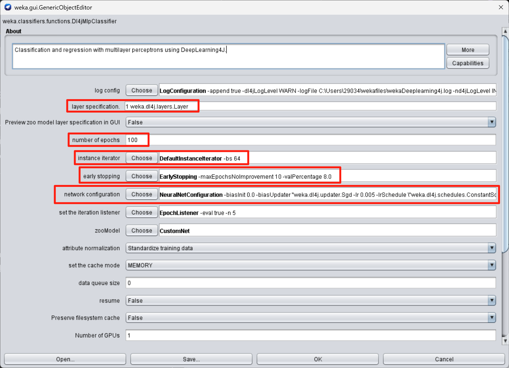

个人作品与经历 / 2026
软件开发、数据分析
与团队交付。
詹姆斯库克大学新加坡校区信息技术本科生，2027 届，GPA 5.85/7.00。具备 Android 与 Python 开发、数据库设计、机器学习实验和敏捷项目协作实践。曾在新加坡 Basilos 参与 AI 工具工程化与内部评测，在四人团队中担任产品负责人，独立开发反诈骗 Android 应用。现居新加坡，英语可作为工作语言。
2026 年 12 月下旬可全职到岗 · 预计 2027 年 3 月毕业
01
精选项目
从目标到实现，关注我的具体贡献与验证方式。
应用开发 / 自动化测试
2026.05 – 2026.08ScamWise Campus
反诈骗教育与链接安全检测 Android 应用｜独立开发
18 个训练场景 · 102 个自动化测试
- 项目目标
- 为学生提供诈骗场景训练、学习反馈与链接威胁检测。
- 我的贡献
- 独立完成 5 个核心页面、分层架构、本地数据存储和外部 API 集成。
实现与交付
- 独立完成 5 个核心页面与 18 个情境训练案例，串联风险判断、警示信号识别、安全行动选择和信心评分，再提供反馈、统计与后续练习建议。
- 采用 MVVM + Use Case + Repository 分层，将 Compose 页面、ViewModel / StateFlow、业务规则和数据访问解耦；以 Room 保存训练记录，通过 Retrofit 接入 Google Safe Browsing。
- 围绕输入校验、训练判分、统计计算、持久化和网络异常编写 102 项测试：79 项单元测试使用 JUnit、Mockito 和内存 Room，23 项 UI 测试使用 Espresso 检查页面流程。
- 在链接发送至外部服务前取得用户同意；提供清除历史与可理解的状态提示。发现密钥暴露后移除源码配置、清理 Git 历史并轮换密钥，同时在反思中提出备份规则和发布包检查的后续改进。
Kotlin · Jetpack Compose · MVVM · Room · Retrofit · Google Safe Browsing API · JUnit · Espresso
工程方法、验证与复盘
关键决策
采用 MVVM + Use Case + Repository 分离界面与业务逻辑，以 Room 保存学习记录，不要求用户创建账号或填写个人资料。外部 URL 检测前征得同意，将结果表述为“未发现已知威胁”；提供清除历史、语义标签和反馈提示，避免恐吓式文案与惩罚性打卡机制。
验证与结果
79 个单元测试与 23 个 UI 测试覆盖业务层和页面流程。将密钥配置迁出源码，清理 Git 历史并重置曾暴露的 API Key。
复盘与后续改进
反思中识别出自动化测试无法替代发布审查：测试没有发现密钥暴露、备份配置假设和大屏适配问题。下一步计划提前梳理数据流与威胁模型，并把备份规则、导航一致性、无障碍和最终打包文件检查纳入发布清单。
全栈开发 / 项目协作
2026.05 – 2026.08智能数码产品推荐平台
产品负责人（PO）／前端开发协作｜4 人团队
3 次迭代 · 10 个用户故事按期交付
- 项目目标
- 构建覆盖 5 类数码产品的推荐平台，支持结果展示与分享。
- 我的贡献
- 担任四人团队 PO，负责用户故事、验收标准、范围与发布协调；修改、调试 HTML/CSS/JavaScript，参与 Flask API 联调和部署，独立实现结果分享功能。
实现与交付
- 将需求整理为 10 个用户故事，明确验收标准与需求—实现—测试映射，推进 3 轮 Scrum 迭代；团队交付覆盖 5 类数码产品的推荐平台。
- 负责需求冻结和变更控制，在估算偏差出现时组织范围调整；协调前端、数据与接口协作，维护 PR 审核顺序和发布检查清单。
- 协调整合约 11,000 条产品目录记录，其中约 2,000 条可用于推荐；参与前端调试、Flask API 联调和部署，独立实现推荐结果分享。
- 核对 GitHub Actions 执行结果与需求一致性，确认团队 12 项自动化验收测试通过后冻结版本。用户端支持匿名搜索、收藏／历史、最多三产品对比及 Helpful / Not Helpful 反馈。
Python · Flask · PostgreSQL · HTML/CSS/JavaScript · GitHub Actions · Render · GitHub Pages
课程教学原型 · 产品与价格来自后端及公开／教学数据，非实时零售库存。截图展示团队交付界面。
工程方法、验证与复盘
关键决策
制定用户故事验收标准，追踪需求与测试对应关系，协调 PR 合并和版本冻结。用户指南记录了匿名搜索、登录后的收藏与历史记录，以及通过 /api/compare 返回最多三款产品对比的团队交付流程；缺失参数明确显示 N/A 或 Not specified。
验证与结果
候选版本通过 12/12 项测试；统筹发布检查清单与验收。交付结果为团队成果，个人实现重点为分享功能和前后端集成。
机器学习 / 验证策略
2026.05 – 2026.08野生动物保护图像分类
数据处理与训练协作｜5 人团队｜DrivenData 公开榜 42/797
公开榜 Log Loss：2.5453 → 1.0136
- 项目目标
- 对 8 类、16,488 张野生动物图像进行分类，并评估跨站点表现。
- 我的贡献
- 承担数据加载、EDA、预处理与基础训练，参与团队 19 组实验，开发与调试 ResNet / ConvNeXt 训练及 Optuna 搜索代码，并参与 TTA、集成与融合。
实现与交付
- 面向 8 类、16,488 张图像完成加载、类别／站点／尺寸分析和预处理；按拍摄站点实施 Stratified Group K-Fold，避免训练与验证站点重叠，并检查 OOF 覆盖。
- 参与团队 19 组实验，开发、调试 ResNet 与 ConvNeXt 训练及 Optuna 搜索代码，对比分辨率、数据增强和训练配置；团队选用 ConvNeXt-Small 320×320。
- 参与 4× TTA、五折集成与 logit 融合；团队公开榜排名 42/797，Log Loss 从 2.5453 降至 1.0136，降低约 60%。
Python · PyTorch · FastAI · ConvNeXt · Optuna · Stratified Group K-Fold
工程方法、验证与复盘
关键决策
定位随机划分造成的地理站点数据泄漏，改用 Stratified Group K-Fold 按站点分组，实现训练与验证站点零重叠。
验证与结果
团队公开榜排名 42/797，Log Loss 为 1.0136；相对初始 2.5453 降低约 60%。个人承担数据处理与训练协作，排名及最终融合结果为团队成果；公开榜指标不能代表生产环境表现。
学生辍学预测与模型比较
个人课程项目｜数据分析与机器学习
10 折交叉验证 · 加权 F1 0.893
- 项目目标
- 分析 3,630 条学生记录及 36 项特征，比较辍学预测模型。
- 我的贡献
- 个人完成探索性分析、特征处理、K-means 聚类和多模型比较。
实现与交付
- 对 3,630 条学生记录、36 项特征完成 EDA、编码字段处理与 K-means 聚类，分析在校阶段的学业表现和辍学结果之间的关联。
- 以 ZeroR 准确率 60.854% 为基线，比较 J48、Naive Bayes、IBk 与 DL4J MLP 的 10 折交叉验证结果；普通 MLP 的 66% 划分实验单独说明。
- 比较 DL4J MLP 的四组配置，Run C 使用 100 epochs、batch size 64、learning rate 0.005 和 8% 早停验证比例，得到加权 F1 0.893、MCC 0.776、ROC-AUC 0.933。
- 结合辍学类别召回率 0.825 和混淆矩阵分析模型取舍；第二学期通过课程数属于在校阶段信息，结论限定为该数据场景，避免将其表述为入学前风险预测。
Weka · EDA · K-means · J48 · Naive Bayes · DL4J MLP

Run C：10 折交叉验证与混淆矩阵A1-Junjie-Chu.docx · Q9，Run C 结果截图
Run C：模型与早停参数A1-Junjie-Chu.docx · Q9，Run C 参数截图课程实验结果 · 指标来自报告中的 Weka 交叉验证输出，不代表独立外部测试集或实际学生干预效果。
工程方法、验证与复盘
关键决策
以 ZeroR 为基线，比较 J48、Naive Bayes、IBk 与 DL4J MLP 的 10 折交叉验证结果，权衡可解释性与分类指标。普通 MLP 因计算成本改用 66% 训练集划分，报告单独注明该结果不能与交叉验证指标直接比较。
验证与结果
Q9 的 Run C 原始截图确认：3,630 条记录、10 折分层交叉验证，准确率 89.4215%、加权 F1 0.893、MCC 0.776、ROC-AUC 0.933、辍学召回率 0.825。配置为 100 epochs、batch size 64、learning rate 0.005、早停验证比例 8%。
前端开发 / 敏捷协作
2025.09 – 2025.12SmartSeat
前端与 UI 交互开发｜曾任 Scrum Master｜7 人团队
16 屏高保真原型 · 3 轮测试（累计 60 人次）· 6 次 Scrum 迭代
- 项目目标
- 构建学生预约、讲师管理和管理员视图，支持课堂座位管理流程演示。
- 我的贡献
- 负责前端实现与 UI 交互工作，独立设计 16 屏高保真原型，参与三轮可用性测试；与后端结对编程和接口联调，并在项目中担任过 Scrum Master。
实现与交付
- 面向课堂选座、预约及座位状态展示参与用户研究与需求分析，独立设计 16 屏高保真原型和交互规范，参与 3 轮可用性测试，累计 60 人次。
- 负责登录、选座等前端页面，与后端约定数据格式和展示逻辑，通过模拟数据演示座位状态、使用率和推荐座位；使用 GitHub Issues 记录反馈并支持迭代。
- 选座集成出现位置偏移时，与后端共同排查坐标原点约定；登录模块进度受阻时开展结对编程，交替编码和检查，推动交付。曾在七人、六次迭代的团队中担任 Scrum Master。
Scrum · Pair Programming · Figma · GitHub Issues · CI/CD
课程演示界面 · 展示学生预约与讲师管理流程。
工程方法、验证与复盘
关键决策
选座页面出现座位位置偏移后，与后端联合排查，定位双方对坐标原点的约定不一致。登录模块进度受阻时，与后端结对编程，交替进行编码和检查，推进界面交付。
验证与结果
独立设计 16 屏原型并参与三轮可用性测试，累计 60 人次；反思附录保留学生预约、讲师及管理员界面。项目完成课程演示与模拟数据流集成。
复盘与后续改进
联调问题暴露了口头接口约定的不足。后续改进计划是在迭代规划时明确坐标原点、参数范围和示例数据，并提前验证跨角色依赖；对设计歧义和进度风险更早提出阻碍。
数据库设计 / SQL 分析
2025.06–2025.09FlyHigh 航空数据库设计与 SQL 分析
个人课程项目｜数据库建模与业务查询
22 个实体 · 5 个业务域 · 3NF
- 项目目标
- 为机队、订票、员工、财务和资源五个航空业务域设计可查询、可汇总的关系数据库。
- 我的贡献
- 独立完成 22 实体 ER/EER 模型、关系约束、3NF 检查、MySQL 建库与数据准备，并编写业务查询及解释结果。
实现与交付
- 定义主键、外键与关系基数，将机队、订票、员工、财务和资源需求映射到 22 个实体，检查第三范式并消除传递依赖。
- 使用 MySQL Workbench 完成建库和数据准备，编写多表 JOIN 与 GROUP BY 聚合，输出查询结果并解释业务关系，验证结构可支持检索与汇总。
SQL · MySQL Workbench · ER/EER · 3NF · JOIN · GROUP BY
工程方法、验证与复盘
关键决策
先明确五个业务域的实体与关系，再定义关系基数和主外键，并以 3NF 检查冗余及传递依赖，使数据库结构能够支撑后续业务查询。
验证与结果
通过建库、数据准备、多表关联和聚合查询输出，检查数据库结构与业务需求的对应关系，并解释查询结果。
02
实习经历
2026.07–2026.10
AI 工程师实习生
Basilos Pte. Ltd.｜新加坡
- 人脸方案选型：针对 AIGC 模特生成图的身份漂移，对比 InsightFace、DeepFace 等 5 种方案；在 3 身份参考库中开展 1:N 开放集验证，13 张已知样本正确识别、10 张陌生样本正确拒识。
- 连接器工程化：将选型结果落实为 1:1 一致性连接器，基于 buffalo_l 完成人脸检测、对齐、特征提取和余弦比对；封装 Python / ONNX Runtime 离线推理，打包 Linux 依赖、校验模型哈希并部署至 Workbench。
- 内部测试与可靠性：整理 54 项记录（23 项身份比对、31 项场景），23 组身份比对均判定正确；同一输入连续运行 30 次均成功。端到端 P50 / P95 为 2.691 / 2.996 秒，记录首次运行异常、质量提示问题和未验证项。
- 异常与结果契约：检查无人脸、多脸、坏图、低清、遮挡及阈值边界，输出含分数、阈值、原因码及人工复核状态的 JSON；区分上传层拦截与连接器处理，避免把拦截结果计作功能通过。
- 图像矢量化：为 Potrace / VTracer 封装 FastAPI 本地接口，完成 99 组实验（36 组黑白、60 组彩色、3 组混合）；结合嵌入位图、路径数量、颜色误差及人工视觉复核评估可编辑性，建议简单黑白线稿优先，记录复杂彩图的路径碎片问题。
- 工具调研与工作流：按官方资料更新 20 款海外大模型对比表；评估飞书 CLI 9 个模块，验证 Markdown 导入、多维表格与日历／任务流程，排查 Scope 授权和 User/Bot 身份问题，形成可复用操作指南。
- 客户需求分析：参与 Golden Travel 实地调研，梳理护照／GeBIZ 标书信息提取、项目截止提醒及行程规划；将信息提取与截止提醒列为优先方向，记录敏感资料处理限制并输出实施建议。
2024.04–2024.09
运营与行政实习生
Specialists Trade Alliance of Singapore（STAS）｜新加坡
- 对照评审标准核验预制 MEP 厂商申请材料，整理在办／已结案件及审核要点笔记，支持认证相关行政工作。
- 以 Excel 维护 3 场展会的双阶段付款、参展商和业务记录，整理分类供应商清单；独立完成中国区建材展会调研，输出结构化信息供业务筛选。
- 拓展管道供应商资源，调整空间参数参与 MEP 配置工具基础模块测试，将供应商、参展商及付款信息整理为可检索的业务资料。
03
教育与能力
2025.01 – 2027.03
詹姆斯库克大学新加坡校区
信息技术学士 Bachelor of Information Technology
- GPA 5.85/7.00｜专业前 5%
- 相关课程：高级软件工程、移动计算、数据库建模、机器学习与数据科学、深度学习、网络安全应用。
2021.10 – 2024.11
新加坡建设局学院（BCA Academy）
建筑工程文凭 Diploma in Construction Engineering
技术与方法
软件开发
Kotlin · Jetpack Compose · MVVM · Room · Retrofit · Python · FastAPI · Flask · JavaScript · HTML/CSS · REST API
数据分析与机器学习
pandas · NumPy · scikit-learn · PyTorch · FastAI · Weka · EDA · OpenCV · Optuna
数据库与业务分析
SQL · MySQL Workbench · PostgreSQL · ER/EER · 3NF · JOIN / GROUP BY · CTE / Window Functions · Excel
测试与工程实践
JUnit · Mockito · Espresso · Git/GitHub · GitHub Actions · CI/CD · OOF · Group K-Fold · ONNX Runtime · Linux offline deployment · JSON validation · P50 / P95
项目协作与用户研究
Scrum · User Story · Requirements Traceability · Release Management · Figma · Lean UX
校园贡献与荣誉
JCU Learning Centre｜EMAS Peer Tutor（2026.05–2026.08）
为 50 余名学生提供编程及核心 IT 课程辅导，并与项目顾问跟踪学习进展。
荣誉
BIMAGE Virtual Design & Construction Boot Camp Competition 季军（四人团队，2023）